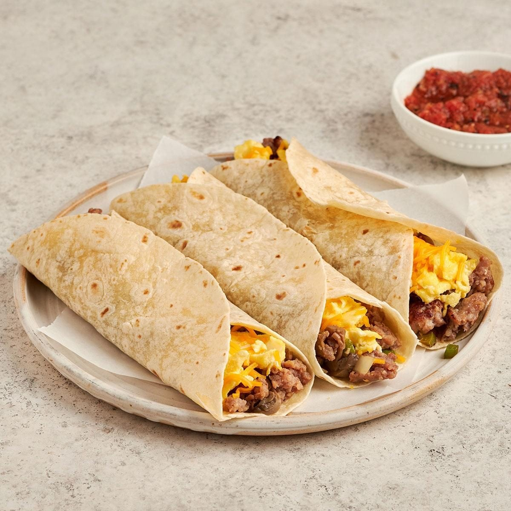

Breakfast Burrito

Description
Breakfast burritos are and rightfully should be a cornerstone of every household. Breakfast burritos were always a staple in my household and to this day hold a special place in my heart.
Ingredients
- 1 pound bulk pork sausage
- 1 small onion chopped
- 1/2 green pepper chopped
- 6 large Eggs
- 8 flour tortillas (8-inch diameter)
- 1 cup shredded cheese
- 1 tablespoon butter
- Salsa
Instructions
- Brown the sausage in a large skillet. Drain most of the drippings out of the pan and leave 2 tablespoons of drippings in there, along with the sausage. Add the onion, green pepper and mushrooms and saute them in the drippings until they're tender.
- Melt the butter in a second skillet over medium-high heat. Add the eggs and scramble them until they're set.
- Spread all the tortillas out and divide the sausage-vegetable mixture between them. Divide the eggs and the shredded cheese between all eight tortillas, too. Fold the bottom edge of a tortilla up and over the filling, and roll up the tortilla. Repeat with the other tortillas. Serve these with salsa if desired.
- Enjoy!